第 1 章
首次启动
本应用无需联网、无需安装依赖：整个项目就是一个 .lcdproj 文件。
- 从 GitHub Releases 下载适合你系统的安装包，或运行源码：
npm run electron:dev。 - 在启动界面选择界面语言，然后选择四种入口之一：打开已有的
.lcdproj、新建项目、恢复自动保存，或打开内置演示项目。 - 首次使用建议选择 Demo——其中已包含相互关联的状态、屏幕和转换，可以安全地边看边学。
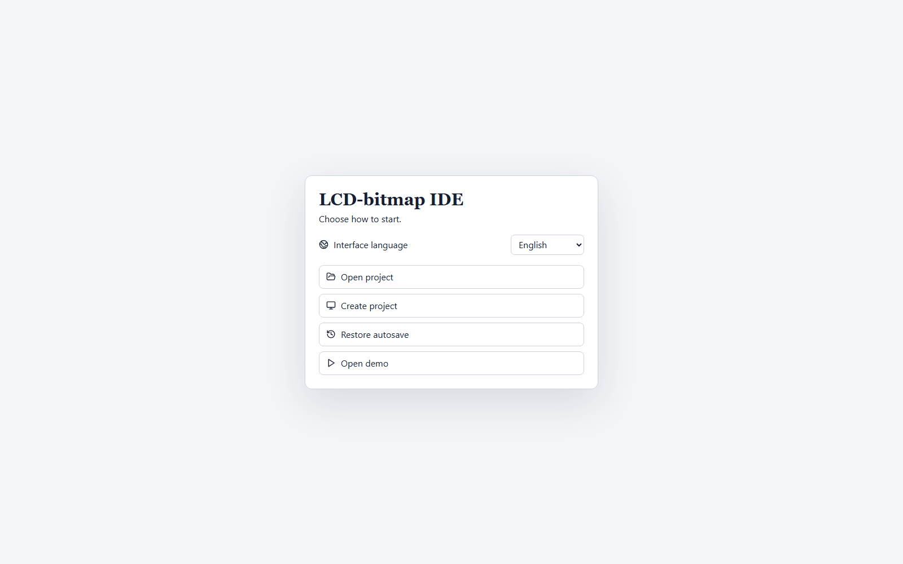
项目每隔几秒会自动保存到 localStorage。这只是崩溃保护，并不能替代显式的 Save project——关闭会话前请务必手动将文件保存到磁盘。
第 2 章
界面结构
左侧是按用途分组的紧凑工作区导航栏：Interface（屏幕与面板）、Logic（FSM 与报警）、Hardware（标签与流程）、Verify & deliver（仿真与固件交付）。每个工作区都拥有各自可独立折叠的侧边栏。
- Collapse navigator（或按 Ctrl+B）只会把全局导航栏折叠成一条窄图标栏——当前工作区自身的侧边栏不受影响。
- 底部状态栏始终显示显示屏尺寸、FSM 状态/转换数量、屏幕与面板元素数量，以及校验状态和未保存更改的提示。
- 主题切换（Settings → Theme）支持浅色、深色和跟随系统三种模式。
第 3 章
FSM 编辑器
状态机是设备的导航地图：一个状态对应一个 LCD 屏幕，一次转换对应对按键、定时器或条件的响应。
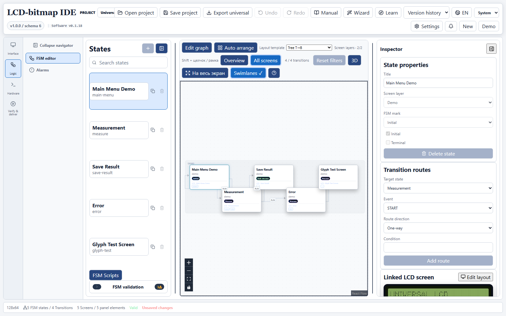
编辑模式
状态图默认以只读方式打开——这是为防止误改运行中逻辑而做出的有意设计。会修改图结构的控件（添加状态、删除、拖动）只有在显式开启 Edit graph 后才可用。
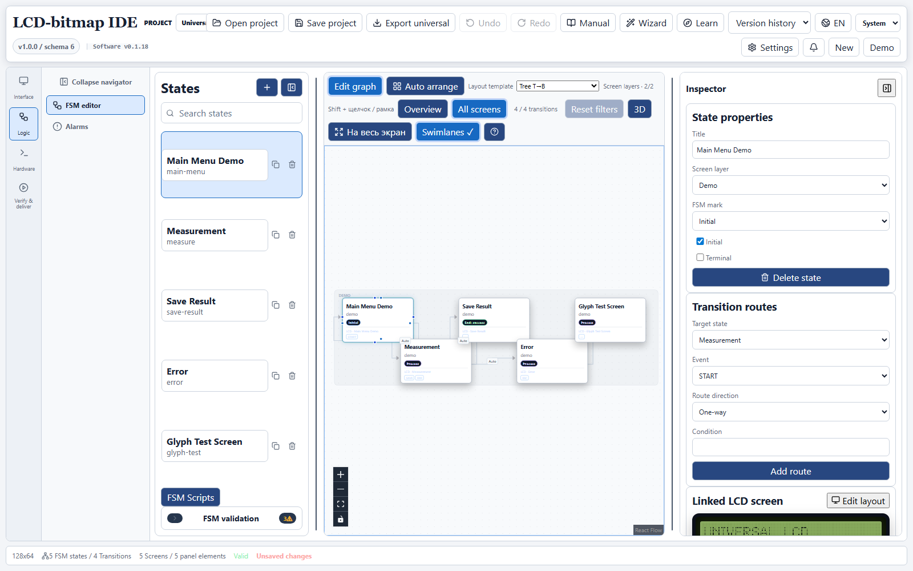
创建状态与转换
- 开启 Edit graph，然后点击状态列表上方的 +，或在画布空白处右键 → Add state。
- 为状态命名，并按需要将其标记为 Initial（入口状态）或 Terminal（终止状态）。
- 要创建转换，可以在节点的连接点之间拖拽，也可以使用右侧检查器中的 Transition routes 区域——直接选择目标状态和事件，无需在画布上操作。
- 通过 Linked LCD screen → Edit layout 将状态关联到 LCD 屏幕，可直接跳转到其像素设计界面。
概览与过滤
当状态图较大时，开启 Overview——它只显示每个子系统的一个入口，而非完整图。当 Overview、子系统聚焦或图层过滤隐藏了部分转换时，工具栏会显示“已显示 / 总数”计数器及具体原因，旁边始终提供一键重置过滤的按钮。
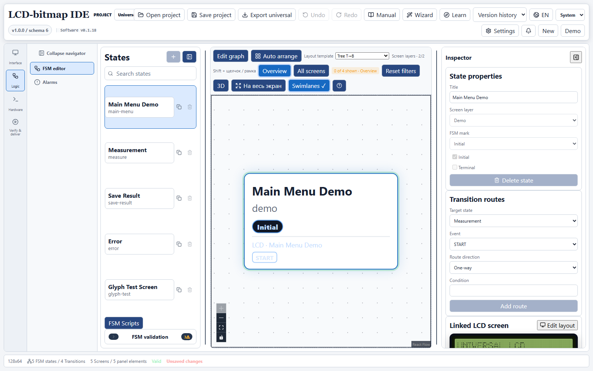
第 4 章
LCD 屏幕编辑器
每个屏幕都是固定尺寸（通常为 128×64）的像素级精确单色帧缓冲，以带类型对象的画布形式编辑：文本、直线、矩形、位图、特殊元素。
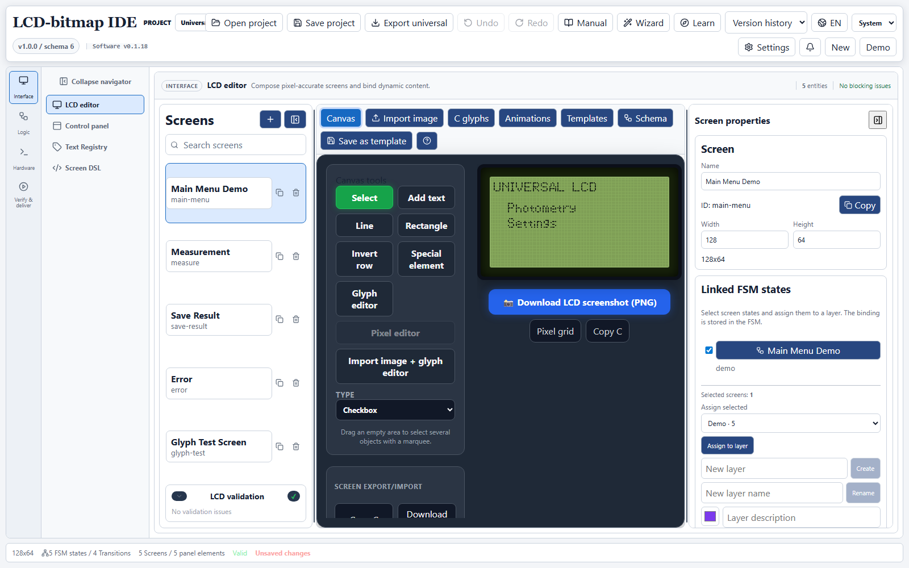
- Select / Add text / Line / Rectangle / Invert row / Special element / Glyph editor——核心绘图工具；在导出之前，每个对象都保持可编辑状态（不会被栅格化）。
- 选中某个位图对象后即可使用 Pixel editor——逐像素精确编辑。
- 通过右侧的 Linked FSM states 面板，每个屏幕都可以同时关联到多个 FSM 状态和某个图层（例如“Demo”或自定义图层）。
第 5 章
位图导入
可以把成品图像（徽标、图标、扫描件）转换为 1bpp 图像，并继续作为普通位图层逐像素编辑。
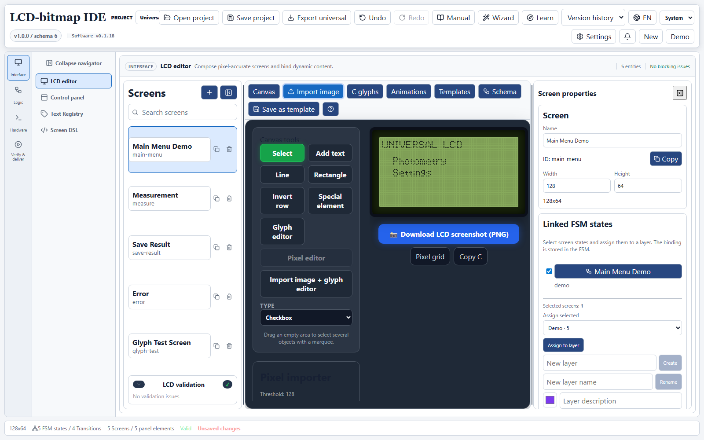
- 打开要放置图像的屏幕，切换到 Import image 标签页。
- 选择文件，调整 Threshold（阈值）和 Dithering（抖动），直到 128×64 预览清晰可辨。
- 点击 Insert and edit bitmap——图像会立即插入屏幕并被选中，同时打开像素编辑器供进一步精修。
第 6 章
动画
动画资源是一组有序的 1bpp 帧，每帧都有自己的持续时间，并共享一个循环标志。一个资源既可以绑定到整个屏幕，也可以只绑定到单个位图层，屏幕其余部分保持静态。
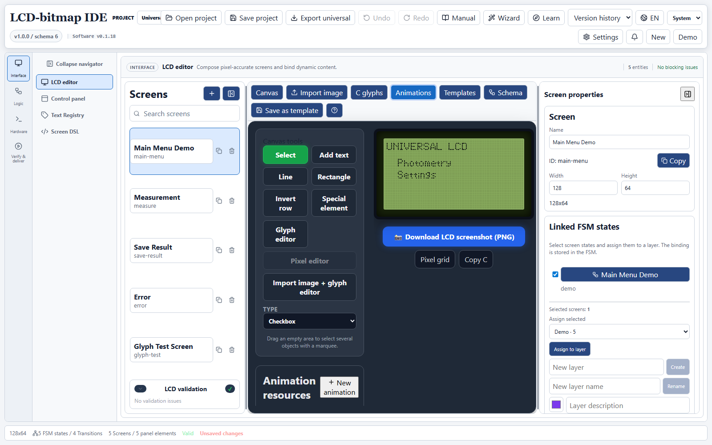
- 点击 New animation，为第一帧选择一张图像——尺寸取自所选位图对象，若未选中对象则取自屏幕尺寸。
- 从其他图像添加更多帧，调整每帧的持续时间（毫秒），并可复制、删除或重新排序。
- 为循环动画（例如等待指示器）开启 Loop，或将其保持关闭以生成单次播放序列。
- 使用播放 / 重播 / 进度条在确定性时钟下预览效果，然后通过 Bind to screen（整屏）或 Bind to selected layer（仅所选位图对象）绑定该资源。
对于不断变化的数值（例如倒计时），请使用绑定 runtime 标签的文本字段，而不是动画：动画用于图形，不应该用几百张几乎相同的数字帧来实现。
导出固件时，每个资源都会生成一个 lcd_animation_frame_t 帧数组（字节数据、字节数、持续时间），并包装为 lcd_animation_t（帧表、帧数、loop 标志）——屏幕与图层的绑定元数据会随之一并导出。
第 7 章
控制面板
按钮和指示灯的物理布局与逻辑设计相互独立，并与 FSM 事件绑定。
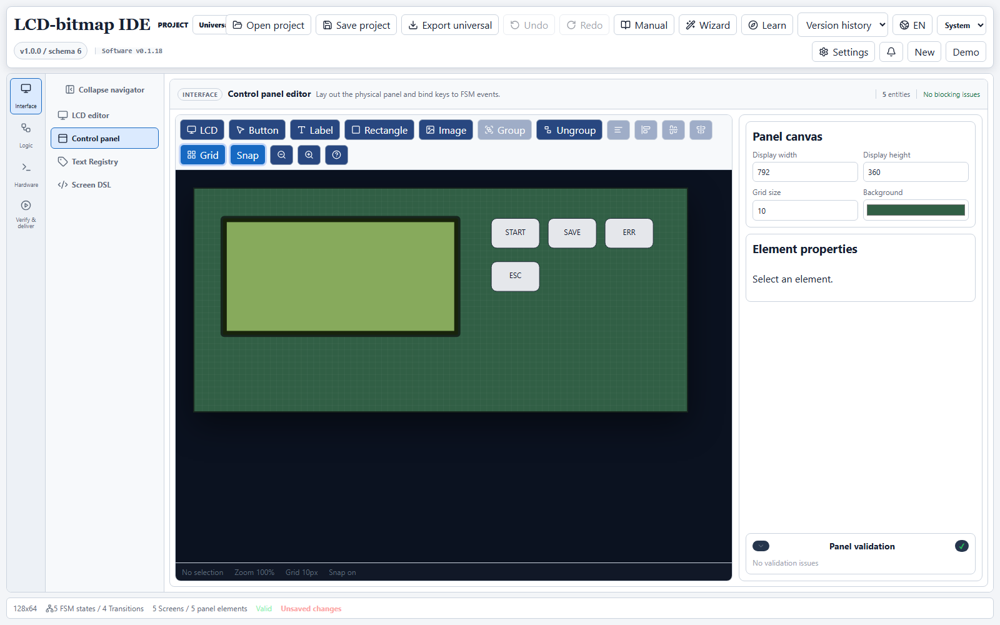
- Group / Ungroup 及对齐工具便于整齐排布大量元素。
- Grid 与 Snap 可按外壳的像素网格进行精确定位。
- 右下角的 Panel validation 面板会立即提示尚未绑定事件的按钮。
第 8 章
HMI 设计器
将屏幕与物理面板整合到同一个场景中，从而一次性检查整个交互场景：哪个按钮在哪个屏幕上做什么，涉及哪些标签和流程。
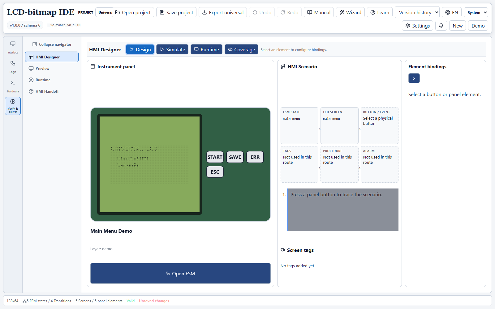
Coverage 模式有助于找出从未在任何场景中使用过的状态或面板元素——在交付固件团队之前非常有用。
第 9 章
标签、流程与报警
三个相互关联的注册表描述了设备上实际发生但不直接绘制在屏幕上的内容。
| 区域 | 用途 | 位置 |
|---|---|---|
| Tag registry | 屏幕与流程之间交换的类型化固件数据（float / int / bool / string） | Hardware → Tag registry |
| Procedures | 带工程说明文档的命名后端流程（例如校准） | Hardware → Procedures |
| Alarms | 命名的异常状态事件，可在任意 FSM 转换中检查，与当前屏幕无关 | Logic → Alarms |
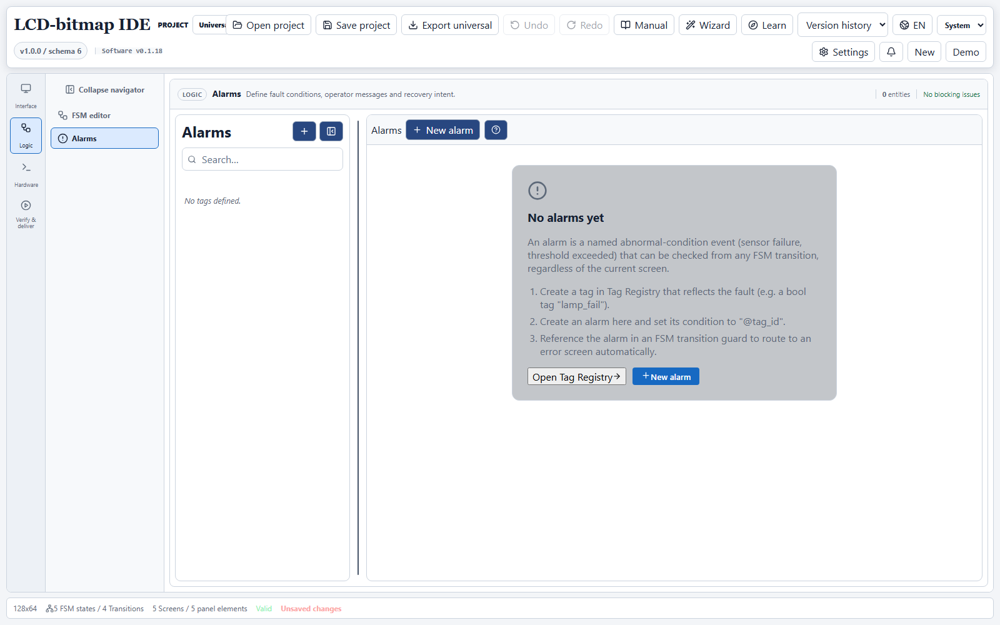
@tag_id 的报警 → 在 FSM 转换的 guard 条件中引用它。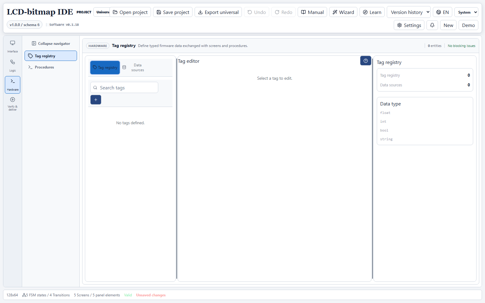
第 10 章
运行时预览
在没有固件的情况下运行 FSM 逻辑：按下虚拟按钮，实时查看 LCD 屏幕渲染和事件日志——然后再将项目交付给嵌入式团队。
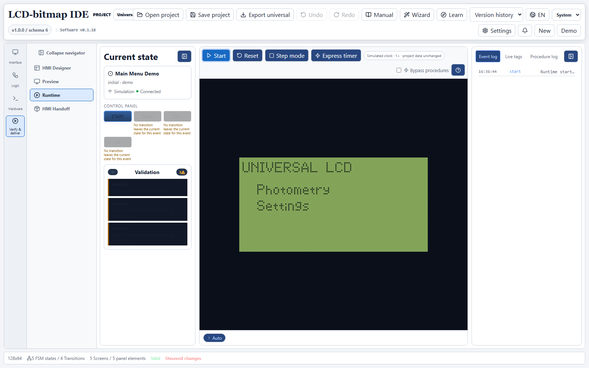
- Step mode 每次只执行一个事件——便于追踪复杂逻辑。
- Express timer 加速模拟定时器，但不改变转换逻辑。
- Bypass procedures 可在完整运行场景时跳过外部后端流程。
- 左侧的 Validation 面板显示与项目校验器相同的警告——例如无法到达的状态。
第 11 章
固件交付
发布前的最后一步：为嵌入式团队组装交付包——校验、供应商包、设备连接检查。
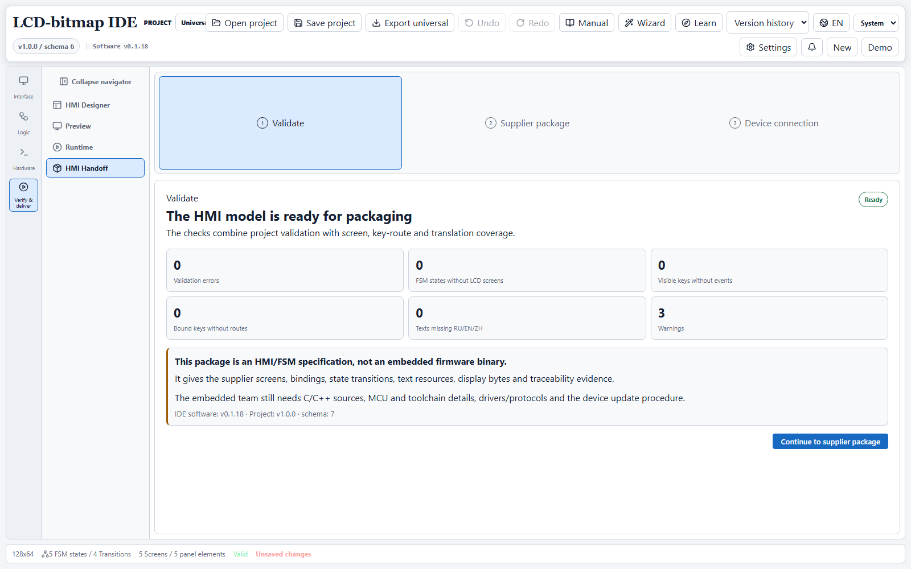
注意：该交付包是 HMI/FSM 规格说明，并非固件二进制文件。它向供应商提供屏幕、绑定关系、状态转换、文本资源和可追溯的显示字节数据。C/C++ 源代码、MCU 与工具链细节、驱动与协议，以及设备更新流程，仍然是嵌入式团队的职责。
第 12 章
API 与 MCP 服务器
Electron 和 Tauri 构建运行完全相同的本地自动化协议：REST 位于 127.0.0.1:8766，MCP（基于 HTTP 的 JSON-RPC）位于 127.0.0.1:8767/mcp——外部脚本、SCADA 系统和 LLM 代理可借此直接读取和编辑已打开的项目。
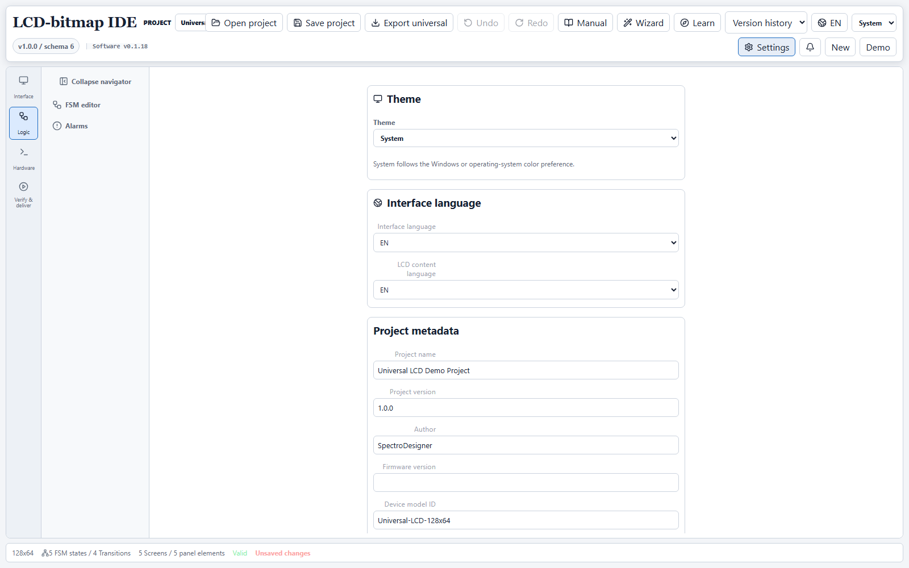
- 两个服务器都仅绑定到
127.0.0.1，从不监听外部网络接口。 - MCP 端口上的
GET /health是无需令牌、也不访问项目数据的可用性检查。 - 环境变量
LCD_IDE_AUTOMATION_TOKEN可为写操作开启强制的 Bearer 鉴权。 - 完整的工具列表、协议结构与集成示例见 docs/API_MCP_CONNECTORS.md。
第 13 章
故障排查
| 现象 | 原因 | 解决方法 |
|---|---|---|
| “Add state” 按钮不可用 | FSM 图当前处于只读模式 | 在 FSM 工具栏中开启 Edit graph |
| 画布上的转换消失了 | Overview、子系统聚焦或图层过滤处于激活状态 | 查看过滤按钮旁的“已显示 / 总数”计数器，并点击 Reset filters |
8766/8767 端口出现 connection refused | 桌面应用未运行，或端口被其他进程占用 | 启动 Electron/Tauri 构建并查看其自动化控制台 |
API 返回 project: null | 当前没有打开任何项目 | 在应用中打开一个 .lcdproj 文件或演示项目 |
| MCP/REST 请求无响应 | 渲染进程未在 5 秒内响应 | 确认应用窗口已打开且未被模态对话框阻塞 |
LCD-bitmap IDE · 版本 0.1.18 · Electron 与 Tauri 构建共用同一套自动化协议和同一个项目模型。详细技术文档位于仓库的 docs/ 目录。